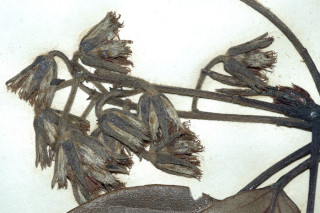
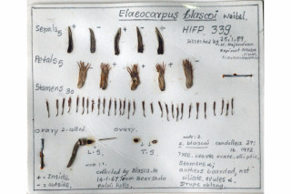
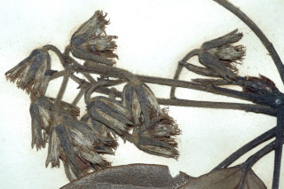
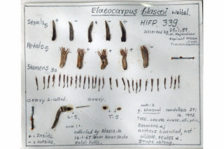

Images :
 



| Habit : | Trees up to 20 m tall. |
| Leaves : | Leaves simple , alternate , spiral , clustered at twig ends; stipules caducous ; petioles 1.5-2.5 cm long, canaliculate , sparsely adpressed hairy ; lamina 6-9.5 x 3-4.5 cm, elliptic or elliptic-ovate , apex acute to shortly acuminate with blunt tip, base rounded , margin shallowly serrate , glabrous ; midrib slightly raised above; secondary_nerves ca.7 pairs, branched with domatia in the axils beneath; tertiary_nerves reticulo-percurrent . |
| Inflorescence / Flower : | Inflorescence axillary racemes , 4-6 cm long, sericeous , 6-7 flowered; flowers white, pedicels 1-1.2 cm long; anthers bearded , not ciliate . |
| Fruit and Seed : | Drupes , ellipsoid , 1.5 cm long, 1-seeded . |